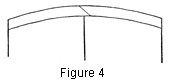

1930—Millinery Processes
by Carlotta M. Brown
BINDINGS
Bindings are frequently applied to the finished brim for decorative purposes, but in a renovation problem they may be used to cover a worn or unattractive edge. They are also used for covering the wire at the edge of the frame. Usually these bindings are made on the bias of the material, but a binding of ribbon with finished edges is used on the straight. There are several different methods of applying bindings.
Single-bias Binding for Covering the Wire on Fabric Frames
Cut 1-inch bias strips from common crinoline, flexible crinoline, or chiffonette. The number of strips needed may be determined by measuring around the brim. Do not sew together, for all frame materials are lapped flat the width of a seam when adjusted to the frame. Crease the strip through the center lengthwise and adjust so that one half is on each side of the wired brim edge. Use even stab stitches about half an inch in length. These stitches should be placed as near as possible to the raw edge of the binding and not under the wire (Fig. 3). This insures a firm fastening which will not curl at the edges. As the binding is sewed in place, hold the bias snug to eliminate any fullness.
This kind of binding protects the outside covering from the wire and from the harsh frame material; it also forms a foundation for the edge stitches of the covering on the top of the brim.
Figure 3. Single-bias binding; edge wire attached with lock stitch. Right of figure, wired edge of brim and lock stitch used in attaching the wire. Left of figure, crinoline edge binding with stab stitch used for attachment.
Single-bias Binding slip-stitched at Both Sides
Figure 4. Single-bias binding slip-stitched on both sides, with diagonal seam at center back of brim.
Figure 5. Section of single-bias binding, or fitted fold, stretched on edge of brim.
The bias strip to be cut for this binding is usually from 1 inch to 1½ inches in width, but it must always be twice the desired width when finished, plus two seam allowances. Measure around the brim for the number of pieces required. If two or more pieces are to be used, baste or sew them to each other but do not join them all together to make a complete circle. Make sure that all the seams run in the same direction. The binding must then be fitted to the brim. To do this, pin the bias to the brim at the center back and, pulling gently lengthwise through the center of the strip, draw the strip entirely around the brim. This should result in a snug, smooth-fitted binding. Allow enough for a final seam, remove from the brim, and join the two ends to complete the circle (for correct placing, see Seams). Determine the point to be placed at the front of the brim and gently work the binding over the edge and into place again, with the binding showing equally on top and facing; then turn in the seam allowance on each side and slip-stitch the fold to the brim covering (see Folds, and Stitches).
Single-bias Binding slip-stitched on One Side
Figure 6. Single-bias binding slip-stitched on one side, showing long-and-short stitch used in attaching binding to brim edge. Seams placed elsewhere than at center back when more than one piece has been used for binding.
This binding is the same as Fig. 4 except that one side of the bias strip is first attached to the hat (Fig. 6) and the loose side is slip-stitched into place. After the binding has been fitted and joined in a circle, place one raw edge even with the outside circle of the top of the brim, and pin. Attach with .the long-and-short stitch, going through to the facing side with every stitch. The distance between the stitch and the edge of the brim determines the depth of the binding when finished. The long stitch follows the fold; the short stitch is on the facing side. Fold the remaining half over the edge, turn in the seam allowance, and slip-stitch into place.
Double-bias Binding
Figure 7.Double-bias binding attached with long-and-short stitch. Wrong side of binding folded inside.
As soft material lends itself to the double-bias binding more readily than heavier material, soft silks, satins, georgettes, or crepes are generally used. Allow four times the finished width of the fold plus two seam allowances, and in fitting proceed as in single binding. After the binding has been fitted and seamed, double it by placing the raw edges together; be careful to avoid a pulled bias. Baste the raw edges together with long loose stitches, place them at the outside brim line, either on the facing or on the top, and pin in place (Fig. 7). Sew as in single binding and turn the folded edge over the brim, slip-stitching it to the top or to the facing covering.
Ribbon Binding
Figure 8. Straight binding with upright joining at back.
Narrow grosgrain, velvet, or taffeta ribbon is preferred for the straight binding. Place the ribbon over the edge of the brim at the center back, with an equal amount of ribbon on each side of the brim, and baste in place. If the hat is a soft one the machine may be used to stitch the ribbon to the brim, but care must be taken to see that the stitching follows the cord finish at the edge of the ribbon (Fig. 8); if the hat is stiff and the binding is to be stitched by hand, small slanting stitches are used to sew the ribbon in place.
Shirred Binding
Figure 9. Shirred binding attached to brim with cord-edge finish. Center of bias seam placed at the center of the back, when the binding has required one strip only.
Shirred bindings may be used to extend the brim of a hat or to add a soft, decorative note. However, they add weight as well as softness, a fact which should be considered in making a selection.
These bindings may be made either on the straight or on the bias of the material, and their width should depend on the purpose for which they are intended. For bias shirred bindings a strip from 2 to 4 inches usually is chosen. Cut a true bias as for a fitted fold; but because of the fullness required, allow from one quarter to one half more than the circumference of the brim, according to the weight of the material. After the pieces are cut and joined in a circle, with seams pressed, determine the center front and center back (for correct seam-placing, see Seams). Beginning at the center back, make a casing just wide enough for a small frame wire or a lace wire (see Casings). In making the casing use a running stitch with a single thread to match the material; draw up the thread snug when the binding is adjusted to the brim. The seams in the casing must all run in the same direction or the wire will not slip through easily. Cut two equal strips of wire, their length determined by the distance round the brim at the point where the binding is to be attached, plus a lapping of from ¼ to ½ inch. Turn the end of each piece of wire ¼ of an inch back upon itself to provide a rounded edge, and run the wire into the casing. Fit the binding over the brim edge so that the wires stand opposite each other, one on the top and the other on the facing. Distribute the gathers evenly around the brim and pin the wires into place. The top wired edge is sewed into place first with the cord-edge stitch (see Edge Finishes), the stitch going through to the facing side of the brim. The sewing of the facing wire follows, the stitch also going through the brim, with the needle coming out between the wired edge of the fold and the top covering of the brim, so that the stitch is hidden under the top wire.
In placing the binding for extending a brim, decide upon the exact amount required for the extension. To insure an even extension, place a row of pins at even distances around the lengthwise fold of the binding. Slip the binding over the brim. The pins formaline around the outside of the hat and hold the extended fullness in place.
For shirred binding on the straight of the material cut the fabric into strips from 2½ to 3 inches wide plus two seam allowances. Determine the amount of fullness desired, as for the bias binding. When straight material is used, more fullness may be allowed than with bias, as the gathers may be pulled into place more snugly. Join the strips in a circle and turn the casing (see Casings). In making the casings the same process and stitch are used as for bias shirred binding.
For shirred-ribbon binding the process just described is followed except that it is not necessary to turn a casing, since the ribbon has a finished edge. The shirr thread runs just above this edge.